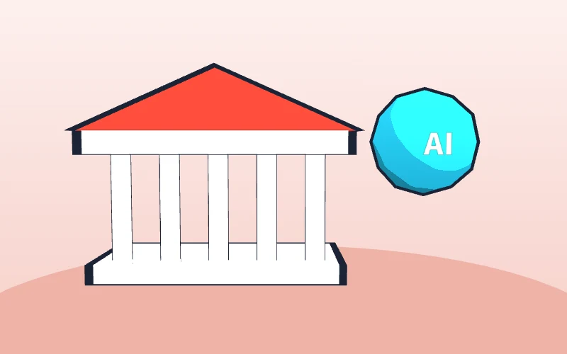
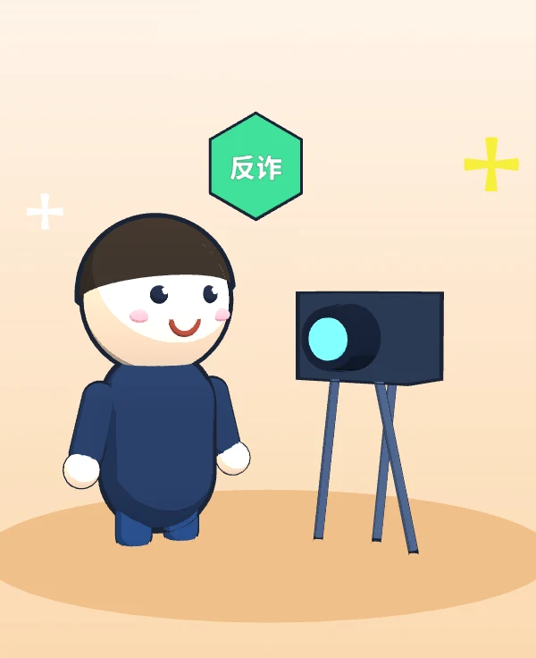
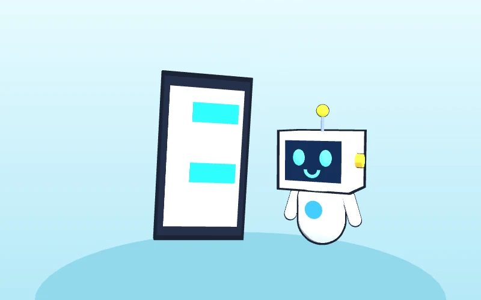
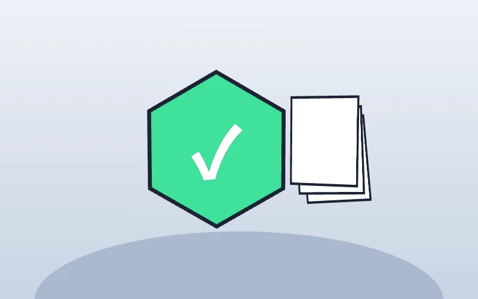
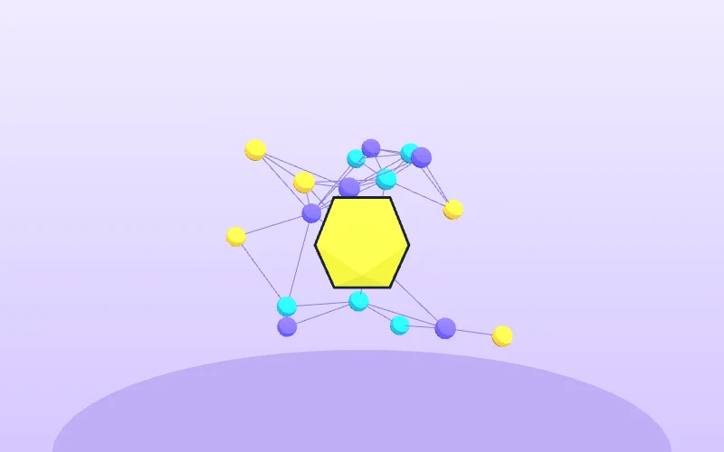
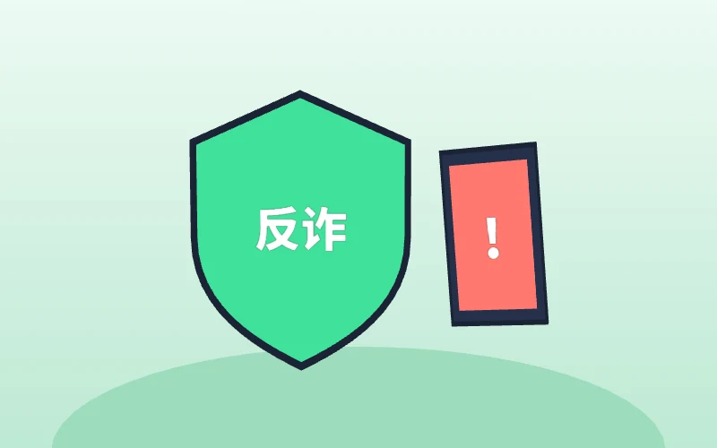
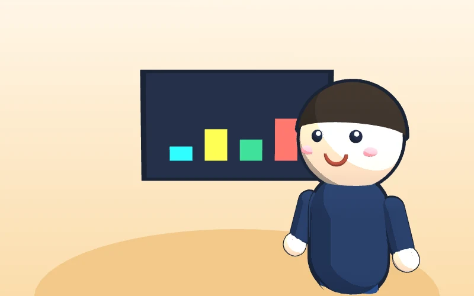

华夏银行亮相服贸会：数智银行与智能体
在 2026 年服贸会上，华夏银行展示了对公“信贷尽调助手”（辅助生成尽调报告）、零售 AI 大模型工具“点石”（识别商机、让客户经营从经验驱动转向数据驱动），以及审计人员“数字分身”——多个专业智能体协同，实现对公信贷审计全流程自动化。
启示自家银行已经在用：智能体先从“辅助生成、辅助识别”做起。
华夏银行员工 AI 实战培训 · 岗位智能体 · 合规办公 · 金融宣传


每一团光是一个岗位智能体，中心是总调度 | 点击光团看它在做什么 → 进入课件 | 拖动旋转、滚轮缩放
点击时间线上的每个节点，看看 AI 搭子能帮什么，又有哪些不能碰。
智能体是搭子，不是替身。
它可以起草、核对、陪练、跑流程；
决策、审批、签字永远是人的事。
投票结果保存在你自己的手机上。现场汇总以主讲人大屏为准。
大模型怎么“想”？现在能做到什么？在银行里已经用到了哪一步？
它预测的是“像不像”，不是“对不对”，所以会一本正经地胡说。
模型的知识有截止日期，不联网时常给出过时数字，口气却很肯定。
LPR 以全国银行间同业拆借中心每月公布的数值为准，利率、汇率、费率、监管条款一律查官方来源。
现场演示：主讲人分别用联网和不联网的方式提问，对比结果。
达特茅斯会议首次提出"人工智能"一词。
计算机在国际象棋上战胜世界冠军，靠的是规则与算力。
神经网络在图像识别上大幅领先，人脸识别、语音识别开始实用。
AI 在围棋上战胜人类顶尖棋手。
今天几乎所有大模型的共同"地基"。
大模型走进普通人的生活，"对话式 AI"成为现实。
通义千问、文心一言、豆包、Kimi 等相继面向公众开放。
DeepSeek-R1 等推理模型出现，AI 开始"先思考再回答"，并能调用工具办事。
智能体进入办公、多模态与视频生成普及。从"会对话"走向"能干活"。
← 左右滑动查看 →
成熟度为主讲人评估的示意，用于说明"哪些能放心用、哪些还要多看一眼"。
工作用途优先选用国产、正规渠道的工具；任何工具都适用第三讲的合规红线。
空话套话，换谁都能用，等于没写。
以下均为公开报道，数据为相关银行或媒体公布，点击“来源”查看原文。

在 2026 年服贸会上，华夏银行展示了对公“信贷尽调助手”（辅助生成尽调报告）、零售 AI 大模型工具“点石”（识别商机、让客户经营从经验驱动转向数据驱动），以及审计人员“数字分身”——多个专业智能体协同，实现对公信贷审计全流程自动化。

据报道，招行“AI小助”已覆盖全行所有岗位；据招行 2026 年半年报，智能化场景达 1386 个，节约等效人工 1388 万小时，“AI小招”对公智能体服务企业客户 79.99 万户。

据工行 2026 年半年报，大模型已在 600 余个场景落地；“AI智审”出具合规审查意见 36 万条，采纳率 98.6%；“工小财”客户经理智能体累计服务超 2200 万次。

据平安银行 2026 年半年报，140 个运营审核智能体覆盖 55 个业务场景，消保审查自动化覆盖率超 90%，日均 Token 消耗超 53 亿。

据新华网报道，邮储银行借助知识图谱和大模型，反洗钱人工甄别效率提升 30%，上半年防止客户资金损失超 8 亿元；兴业银行上半年拦截涉诈资金 5.04 亿元。

中国人民银行等八部门联合发布。要求金融机构对网络营销内容合法合规负责并建立审核机制；内容不得虚假或引人误解；贷款产品不得使用“低门槛”“秒到账”“低利率”等说法。
现在就扫码安装千问，开场的录音，结尾给大家看纪要。
手机应用商店搜索“千问”，或扫描主讲人大屏上的官方下载码。认准官方开发者。
手机号登录；麦克风权限选“使用时允许”，通讯录、位置等无关权限不开。
首页找到“录音 / 记录”入口，点开始；结束后一键生成要点、结论和待办。
各版本界面入口可能略有不同，以手机上实际显示为准。
开会、听讲座时打开录音，AI 自动转写成文字，再整理出要点、结论和待办。电脑端可以直接用语音输入写材料。
注意 只用于内部培训、非敏感例会。客户面谈、涉及客户信息或经营数据的会议一律不录。
不只是聊天：你用一句话交代任务，它在电脑上一步步帮你做完，比如整理文件、写文档、汇总表格。常用流程可以存成技能反复用，人不在电脑前也能用微信远程下指令。
注意 是否可在行内办公电脑安装，以行内终端与信息安全规定为准；只处理非敏感、已脱敏的资料。
先守住红线，再谈效率。下面每一条，都比任何技巧重要。
姓名、身份证号、卡号、账户、交易流水、征信、联系方式、影像资料，一个字都不发给外网 AI。
未公开的财务与经营数据、授信额度、风控模型与规则、客户名单，一律不上网。
内部制度、审计报告、监管报送材料、内部通知，不拍照、不上传、不让 AI 总结。
🖥️ 行内终端按规定使用：能否访问外网 AI、能否安装软件，以行内规定为准。
📱 不拍屏、不转存：业务系统界面、客户资料不拍照发给 AI。
🏦 涉客、涉数的 AI 由行里统一部署：个人不得私自接入。
AI 给的是草稿，不是结论。
宣传、话术、材料按流程审。
授信、定价、处罚不交给 AI。
能不能用，先问科技和合规部门。
每个场景都按同一结构：痛点 → 提示词模板 → 人工把关点。模板一键复制，课后直接用。
千问 / DeepSeek 起草结构，人工填入真实数据，按发文流程审核。
千问录音一键成纪要，议定事项逐条核对后再印发。
一段材料先出大纲，再用 AI 生成初稿；口径和数据以行内为准。
写公式、做透视、查异常、出图表；演示只用模拟或脱敏数据。
聊天机器人“有问必答”，智能体“有事能办”。先看每个岗位能有什么搭子，再现场用 Claude / Codex 做一个出来。
以下对话为虚构演示，客户角色不对应任何真实个人。现场主讲人会请学员上台与 AI 对练。
不用会编程：把需求写清楚，交给 AI 编程工具去写代码。下面是开发过程的动画还原，现场主讲人会在电脑上实际操作一遍。
AI 把规定切成条款、建立“禁用表述 + 必备要素”规则库。初审时先逐条比对，再让大模型解释原因并给出修改建议。
经营数据汇报提炼、会议材料准备、政策文件要点速读、讲话稿初稿——AI 起草，管理者把关定调。
选一两个岗位、几个高频场景先试点；同步明确可用工具、红线和复核责任；有成效再复制到更多岗位。
涉及客户和经营数据的智能体，须经总行科技部门私有化部署；AI 输出的每一份对客材料都要有人签字负责。
制度学习、话术陪练、写作润色、宣传脚本。知识库只用公开资料，输入内容不含客户和经营信息。
客户画像、授信材料核对、经营分析等，必须由总行统一规划、私有化部署，经安全评估后使用。个人不得自行开发接入。
反诈宣传和金融知识普及最安全，也最适合网点使用。以一条 60 秒竖屏短视频为例，走完六步。
左侧是样片的分镜动画预览。把成片命名为 demo.mp4 放进 assets 文件夹，这里会自动换成真实视频。
不说“保本”“稳赚”“最高收益”，不夸大、不误导。
理财、保险、贷款类内容必须有风险提示和关键信息。
AI 生成的画面、声音按规定显著标识；不出现真实客户。
以行名义发布须经消保与合规审核；行徽等品牌素材须经宣传部门授权。